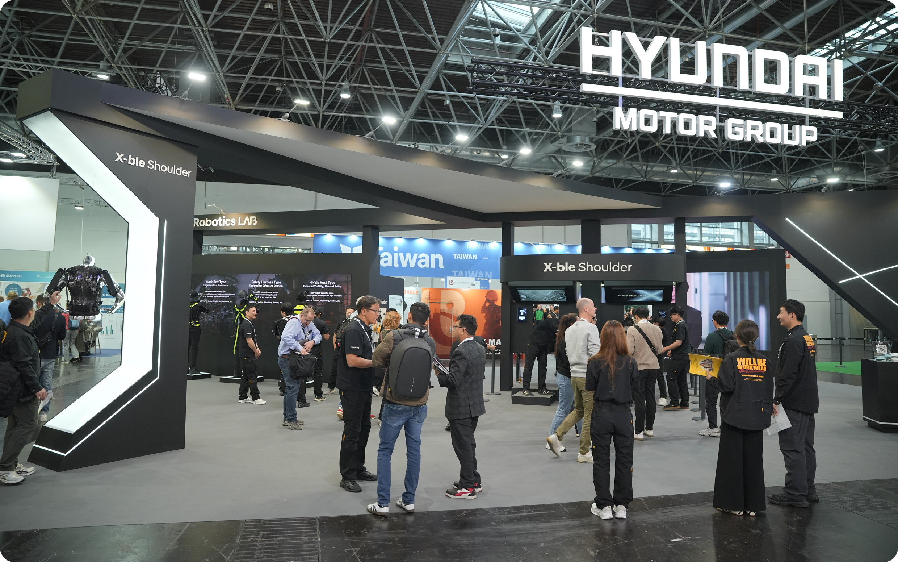
제품과 상담 경험을 함께 보여주는 A+A 2025 현장 부스 전경
Global Exhibition / B2B Experience
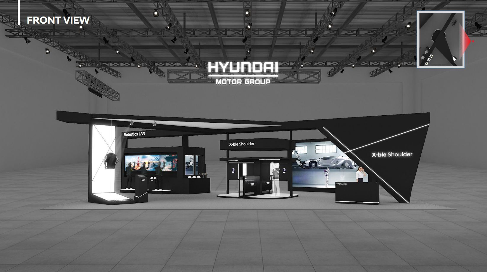
부스 공간을 제품 소개, 라인업 탐색, 착용 체험, 상담 신청으로 구성하고 X-ble Hub를 현장 참여 접점으로 연결했습니다. 방문자의 제품 관심이 상담 요청과 후속 응대 정보로 이어지도록 디지털 접점과 운영 흐름을 설계했습니다.

제품과 상담 경험을 함께 보여주는 A+A 2025 현장 부스 전경
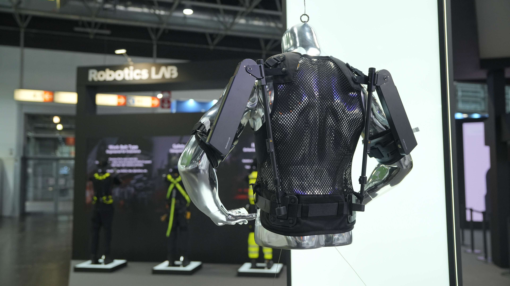
웨어러블 로봇 엑스블 숄더의 제품 가치가 집중되는 쇼케이스
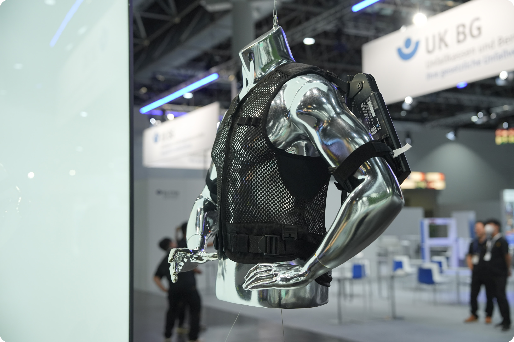
방문객의 진입과 제품 이해를 유도한 부스 전면 구성
X-ble Hub의 모바일 접점을 현장 공간과 연결해, 방문자가 부스 정보를 확인하고 체험을 진행한 뒤 상담을 신청하도록 유도했습니다.
제품 소개 방향, 전시 목적, 현장 운영 요구사항 협의
공간 제작, 공간 대여, 현장 인력·물류 실행
역할 범위: 제품 탐색과 착용 체험이 상담 신청으로 이어지도록 전시 경험과 디지털 접점을 기획했습니다. 또한 공간 디자인, 시스템 구축, 운영 인력, 물류·통관 전반의 실무 커뮤니케이션과 일정을 조율하고 현장 운영을 지원했습니다.
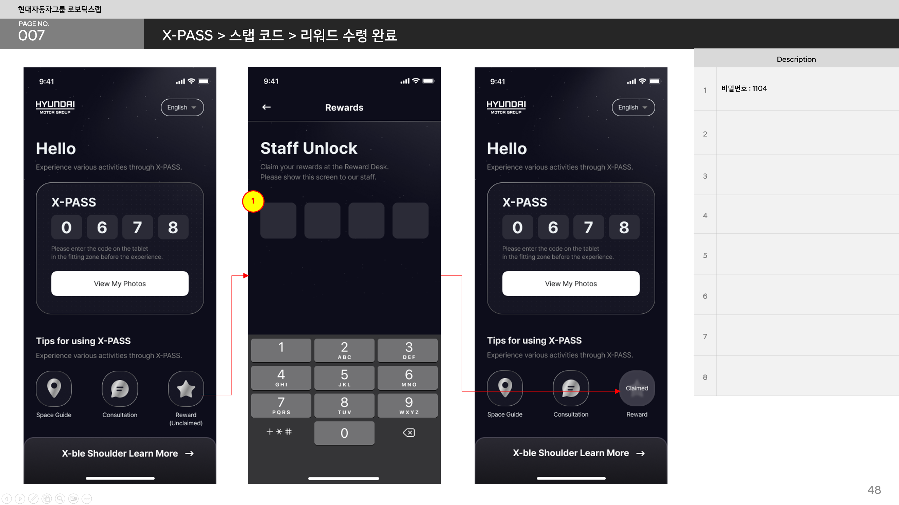
스태프가 코드를 입력하면 X-PASS에 리워드 수령 상태가 반영되도록 구성해, 중복 지급을 확인하고 현장에서 처리할 수 있도록 설계했습니다.
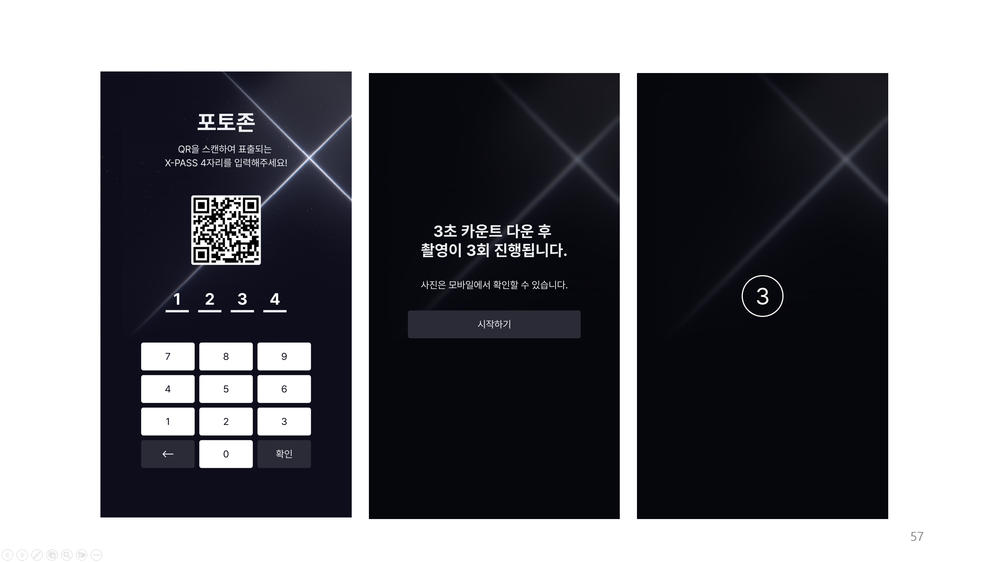
모바일에서 발급된 인증번호를 태블릿에 입력해 촬영을 시작하고, 촬영 결과를 방문자가 확인할 수 있도록 포토존 이용 흐름을 설계했습니다.
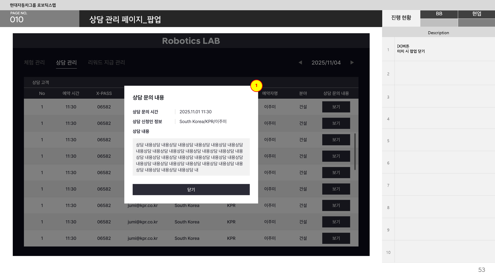
현장에서 수집된 상담 정보를 운영자가 확인하고 후속 응대로 연결할 수 있도록, 문의 내용과 진행 상태를 관리하는 화면을 기획했습니다.
웨어러블 로봇은 설명만으로 착용감과 작업 지원 방식을 전달하기 어려웠습니다. 쇼케이스에서 제품을 확인한 뒤 피팅 존에서 직접 착용하도록 동선을 구성했습니다.
포토존과 리워드, 상담 신청을 X-PASS와 운영 화면으로 연결해 체험 참여가 상담 요청과 후속 응대로 이어지도록 설계했습니다.
공간 디자인 변경, 굿즈 제작, 마네킹 제작, 인력 배치, 항공 운송과 통관 일정을 주간 보고와 회의에서 관리하고, 현장 설치 일정과 운영 준비 사항을 지속적으로 점검했습니다.

부스 공간과 비즈니스 상담실의 디자인 진행안, 수정·의사결정 사항을 관리한 주간 보고 자료

체험 지원, 제품 안내, 상담, 시스템 관리 등 구역별 역할과 투입 인원을 정리한 운영 계획
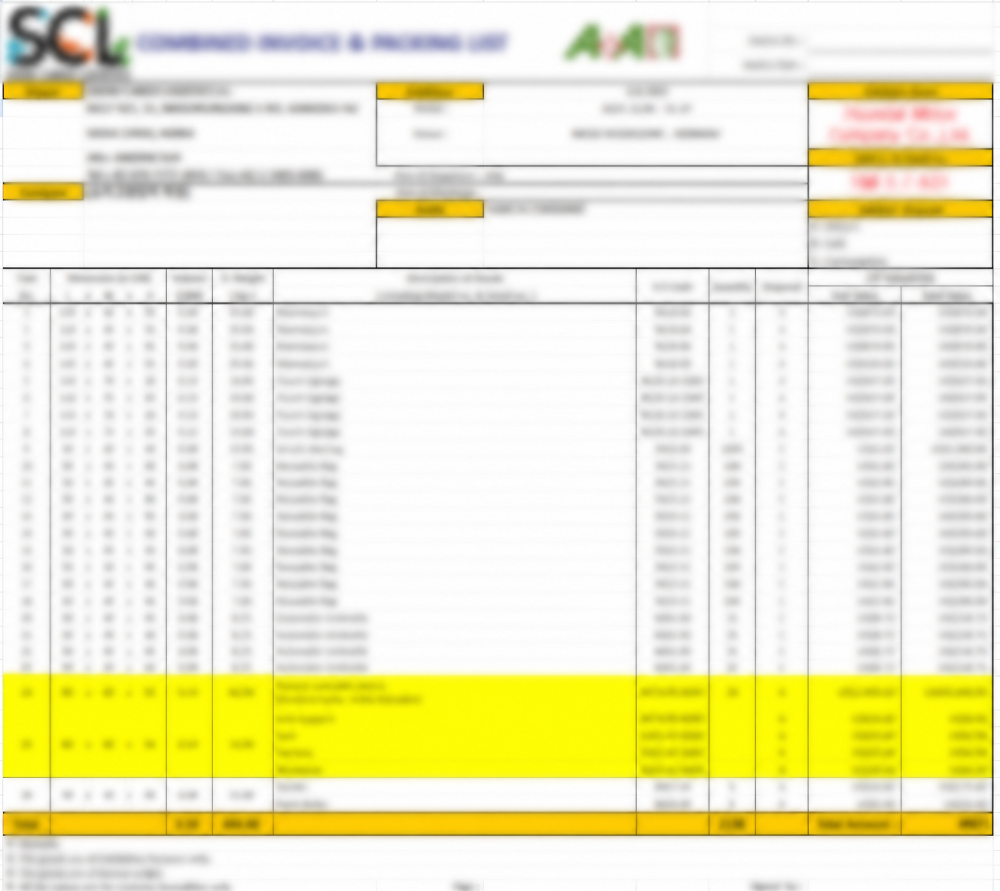
제품과 전시 물품의 패킹리스트, 항공 운송, 현지 통관 일정을 조율한 실행 문서
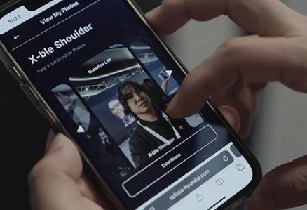
X-ble Hub를 통해 현장 정보와 참여 접점을 확장한 모바일 화면
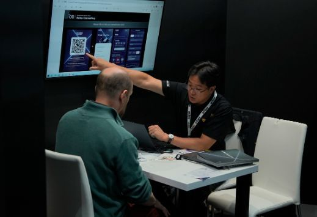
제품 이해 이후 상담과 네트워킹으로 이어지는 현장 운영 장면
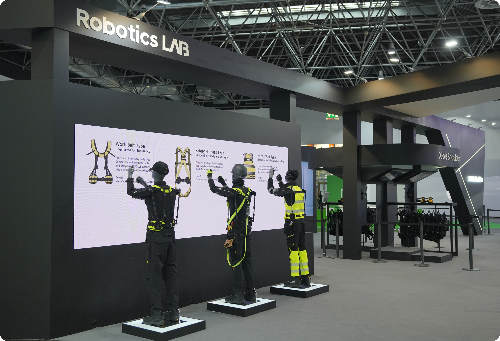
제품 디스플레이와 방문자 동선이 함께 보이는 전시 공간
Planning Evidence · 초기 포트폴리오 PDF 추출 이미지 및 현대자동차그룹 저널 공개 이미지. 민감 정보가 포함된 물류 문서는 블러 처리된 자료를 사용했습니다.
제품 이해·착용 체험·상담 예약으로 이어지는 웨어러블 로봇 방문자 여정 정의
X-PASS 기반 모바일 인증, 태블릿 포토존, 상담 신청 웹페이지 기획 및 구현
공간 디자인·현장 인력·시스템 운영을 연결하는 실행 및 의사결정 관리
제품·전시 물품의 항공 운송과 현지 통관 일정을 포함한 해외 전시 PM 운영